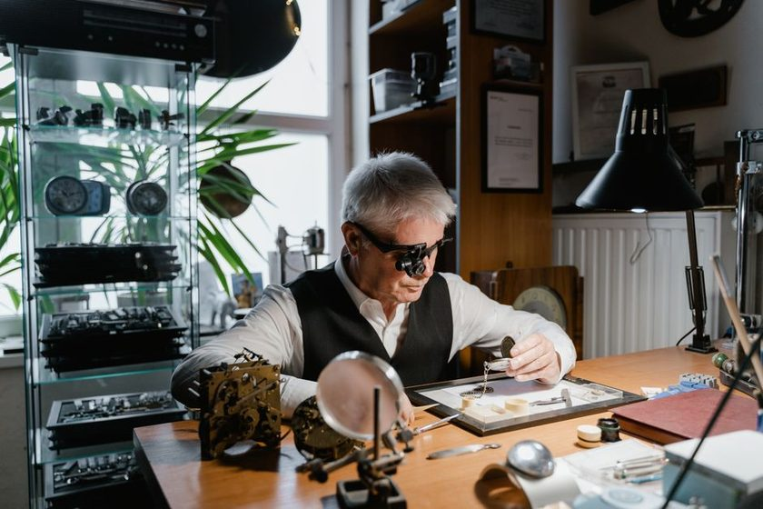
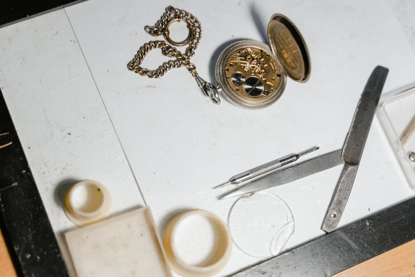
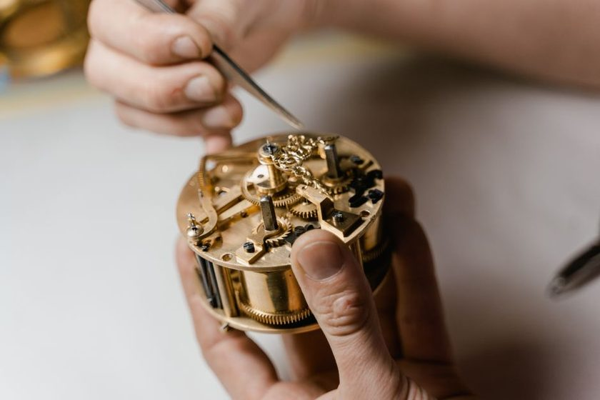
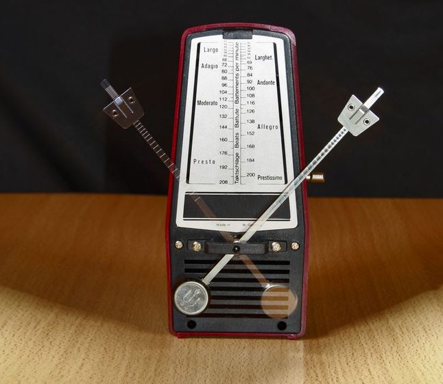
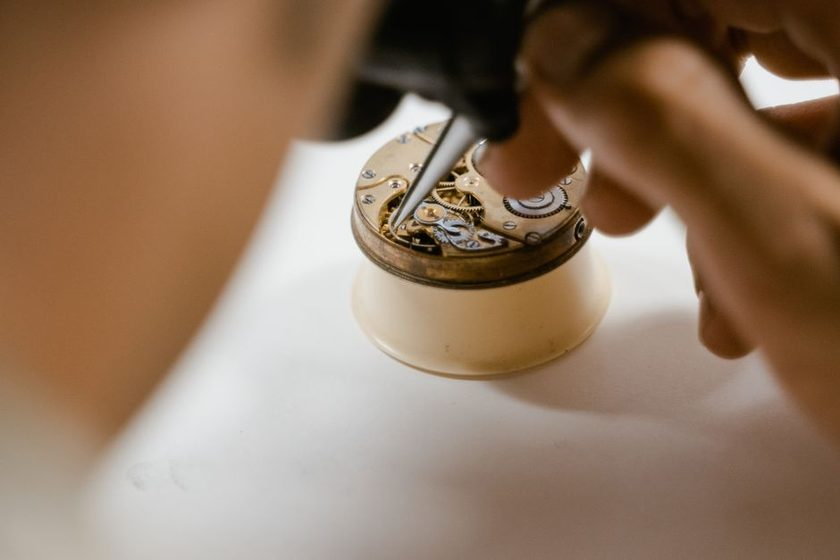
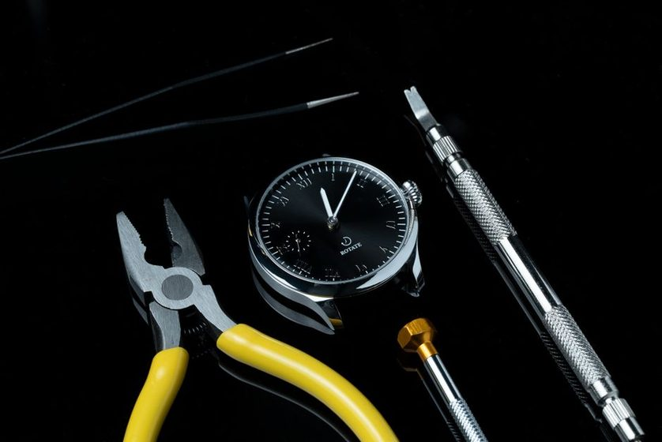

Amplitude
Reading Amplitude on a Timegrapher
What the dial of lift angle and beat error actually tells you about a movement's health, one degree at a time.
Amplitude — the arc, in degrees, that the balance wheel swings through on each beat. A healthy movement typically shows 220–300° dial-up.
Beat Rate is a small journal about servicing old mechanical watches at home — reading amplitude, chasing beat error, choosing an oil, and learning to trust a movement that has been running for sixty years. No sponsorships, no gear reviews, just notes from a kitchen table.

Nine short pieces on regulation, amplitude, lubrication, and the tools a home bench actually needs — written as they were learned, not as a buying guide.

What the dial of lift angle and beat error actually tells you about a movement's health, one degree at a time.

Isochronism failure is not a fault of your watch alone — it is a property of the balance spring under changing torque.

Synthetic oils migrate and oxidize long before they run dry — the five-year interval is about viscosity, not depletion.

Two small pins control effective hairspring length — and most home adjustments go wrong by moving them too far.

A spring that has taken a permanent set behaves differently at the bench than one fresh from the barrel — here's how to tell.

The tick and the tock should land exactly between two beats — a kitchen metronome makes the asymmetry audible.

Viscosity charts written for vintage calibers assume oils that no longer exist — matching a modern equivalent takes judgment.

A loupe, a set of screwdrivers, a case knife, and patience — most of what's marketed as essential is not.

A movement that gains in dial-up and loses in crown-down is behaving exactly as gravity and geometry predict.
The same numbers we write about here — amplitude, beat error, positional variance — logged against each watch you own or service, so a trend is visible instead of guessed at.

Beat Rate started as a set of private notes on servicing a handful of family watches and grew into a small public journal. We write about the mechanics we can measure — amplitude, rate, beat error — and try to explain them the way we had to learn them ourselves. Read more about the project →